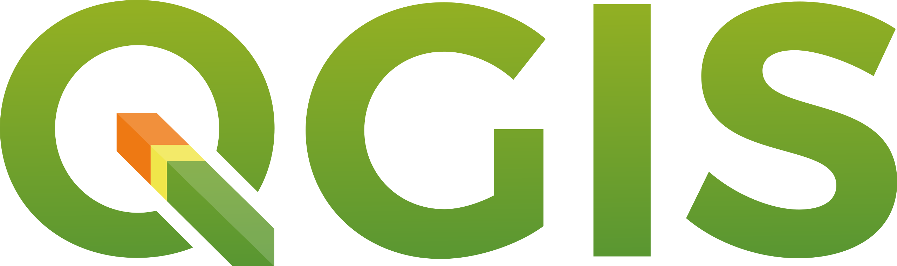
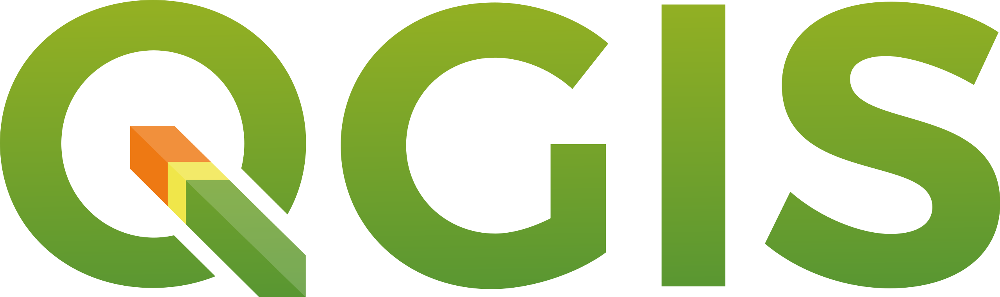

Experiencia Laboral
Trabaje realizando actividades como asesor técnico en materia de inocuidad y calidad bajo los sistemas de reducción de riesgos de contaminación en unidades de producción agrícola, y en unidades de empaque; con el objetivo de certificar o reconocer empresas en cumplimiento de las buenas practicas agrícola, buenas practicas de manufactura y buen uso y manejo de los agroquímicos; bajo la implementación de los lineamientos generales para la operación, certificación y reconocimiento de sistemas de reducción de riesgos de contaminación.
En cumplimiento con:
- NOM- 003- STPS-1999
- NOM-026-STPS-2008
- Modificación de la NOM-127-SSA1-1994
- Norma ISO 17025
- CAC/RCP 1- 1969 Rev. 4 (2003)
- NOM-006- CONAGUA -1997
- NOM-251- SSA1-2009
- NOM-182-SSA1-1998
- Ley federal de sanidad vegetal
- Ley de infraestructura de la calidad
- Código Internacional de Prácticas recomendaciones y Principios Generales de Higiene de los Alimentos y la evaluación de puntos críticos de control (HACCP).
Realizando actividades de:
- Asistencia técnica, toma de muestras en determinaciones microbiológicas (Salmonella Spp, E. coli, coliformes totales ,coliformes fecales y Listeria monocytogenes) y químicas (metales pesados, fisicoquímicos en agua y multiresiduales) para la Vigilancia de Contaminantes y Residuos.
- Desarrollo de POE y POES (procedimientos operativos estandarizados).
Capacitador a personal operativo en unidades de produccion y empaque, impartiendo los siguientes temas:
- Microbiología básica
- Enfermedades transmitidas por alimentos (ETA´S)
- Manejo de fauna doméstica y silvestre
- Practicas de seguridad e higiene de los trabajadores
- Preparación y monitoreo de sustancias desinfectantes
- Manejo del agua, Buen uso y manejo confiable de agroquímicos
- Almacenamiento de insumos
- material del empaque de vegetales y producto terminado
- Prácticas de cosecha
- Prácticas preventivas durante el empacado del producto
- Trazabilidad y sistema de retiro de productos
- Identificación de los principales síntomas de enfermedades infectocontagiosas
- Buenas prácticas agrícolas
- Buenas prácticas de manufactura
- La Ley de Modernización de la Seguridad Alimentaria (FSMA).
Así mismo, realice auditorias para la evaluación de la conformidad realizando la revisión de las unidades de producción y empaque, así como el acompañamiento del auditor externo y apoyando en la implementación de las acciones correctivas para el cumplimiento as necesidades de ofrecer articulos y productos
con el fin de llegar a mas clientes.
Trabaje realizando un estudio de impacto ambiental para el establecimiento de un cementerio ejidal en el municipio de San Fernando, Tamaulipas. Esta experiencia me ha proporcionado un entendimiento profundo de la importancia de la planificación y desarrollo sostenible en la agricultura y el cuidado del medio ambiente.
Realización de cursos en línea material audiovisual generado en video y realizando asesoría virtual por medio de TEAMS abordando y desarrollando los temas de sistemas de información geográfica, interpretación de imágenes satelitales en falso color, realización de mapas de cambio de uso de suelo, ordenamiento territorial, descarga de imágenes satelitales landsat, a través de los softwares Arc Gis, y Quantum gis.
Como auxiliar de laboratorio en el Departamento de Agroindustrias de la UACH, colaboré en la generación de energías alternativas mediante la digestión anaerobia para la producción de biogás.
Elaborador de proyectos productivos. 2015 Diseño de estrategia de intervención institucional, focalización, diagnostico, elaboración y puesta en marcha de proyectos productivos (INAES y POP)
Monitoreo de especies faunísticas (mamíferos, reptiles y aves) con redes de niebla, y trampas Tomahawk y Sherman en la empresa Holcim planta Acapulco.
ESTANCIA PROFESIONAL
Estancia pre profesional realizada en el hotel Iberostar playa paraíso en el municipio de Solidaridad Quintana roo participando en el área de mantenimiento auxiliar como administrativo de mantenimiento donde se realizaron actividades de producción de plántula en invernadero, trasplante de árboles, se elaboró un proyecto de aprovechamiento de residuos de comedores para la elaboración de composta utilizable para la producción y mantenimiento de plantas de hornato; y se realizaron recorridos nocturnos por la playa del hotel y sus alrededores para el monitoreo y conservación de 4 especies de tortuga marina (Caretta caretta, Eretmochelys imbricata, Dermochelys coriacea y Chelonia mydas), trabajando en coordinación con el jefe de mantenimiento del hotel y la bióloga responsable de supervisar el monitoreo, en dichos monitoreos se realizaron recorridos por la playa y sus alrededores se identificaban las tortugas que anidaban en la playa y se recolectaban los huevos para depositarlos en el área de anidación hasta su eclosión y liberación de los ejemplares, se contabilizaban los huevos y se identificaban las especies.
CLAVE DE AUTORIZACIÓN SENASICA
Autorización como Profesional Fitosanitario Autorizado en Sistemas de Reducción de Riesgos de Contaminación en la Producción Primaria de Vegetales con clave vigente hasta 26-11-2024 (SENASICA).
CURSOS Y TALLERES
• Desarrollo web fullstack actualmente cursando en la U camp. Actualmente desarrollando proyectos de Landing de Venta, Aplicación CRUD y Dashboard App.
• Introducción a HACCP básico (análisis de peligros y de puntos críticos de control); modalidad virtual julio -2023 (CANASITNTRA).
• La mejora continua de los planes de inocuidad alimentaria; modalidad virtual julio -2023 (CANASITNTRA).
• Actualización de Sistemas de Reducción de Riesgos de Contaminación (SRRC) en Sistemas de Reducción de Riesgos de Contaminación en la Producción Primaria de Vegetales. junio - julio 2021 (CESAVEM).
• Formación y/o actualización de profesionales y terceros especialistas en sistemas de reducción de riesgos de contaminación en la producción primaria de vegetales. 09-2018 FACULTAD DE AGROBIOLOGIA (U.M.S.N.H.).
• Curso-Taller “Actualización de criterios en la aplicación de sistemas de reducción de riesgos de contaminación. 06-2018 (SAGARPA - SENASICA).
• Estándar de competencia EC0821 Operación de las acciones técnicas de sanidad e inocuidad agroalimentaria. 10-2017 (SEP - CONOCER).
• Curso-Taller de alineación con base al estándar de competencia 08-2017 (SENASICA – COCESAVE, A.C.).
• Taller sobre reglamento de productos frescos (PSR), análisis y controles preventivos e importancia del sistema de reducción de riesgos de contaminación. 10-2017 (CESAVER).
CONFERENCIAS Y CONGRESOS
• Seminario sobre que esperar durante una inspección regulatoria de la norma de inocuidad de productos agrícolas frescos 05-2021 (IICA Y FDA).
• Seminario web programa de inocuidad agrícola en la cadena de suministro en la industria de berries en Chile 05-2021 (IICA Y FDA).
• 6to foro internacional de alimentos sanos. 05-2018 (SAGARPA – SENASICA).
• Seminario en línea requisitos SAGARPA para comercializar plaguicidas 04-2018 (Ingenieros agrónomos parasitólogos, A.C. – EJECUTIPS).
• Formación y/o actualización de profesionales en sistemas de reducción de riesgos de contaminación en la producción primaria de vegetales. 10-2017 (Capacitación para la calidad agropecuaria, S.C. – CESAVER).
• Participación en la treceava pasantía académica UACh-instituto de historia de Cuba 2015 (Instituto de historia de cuba).
• PLAN DE MANEJO DE ECOTECNIAS 09-2014 (UACH Departamento de suelos).
• Participación en el ciclo de conferencias en conmemoración al día del árbol en México, realizado en el hotel Fairmont-Mayacoba de playa de Carmen, Q. roo. 07-2014 (Ayuntamiento de solidaridad, Dirección general de ordenamiento ambiental y desarrollo urbano, Dirección de medio ambiente).
• Taller de manejo de reptiles realizado 1er congreso internacional conservación y aprovechamiento sustentable de vida silvestre 04-2014 (Dirección General de vida silvestre).
• Diplomado REIKI MASTER (03-2013).
Desarrollo de pagina web full stack (UCAMP)
Durante el boot camp desarrolle proyectos creando paginas web mediante la utilizacion de: Javascript, HTML, CSS, NODE, REACT, MONGO DB, frontend y backend
Landing articulos de sublimacion
Proyecto para la empresa creaciones rye con giro de diseño y sublimacion. Se desarrollo en HTML y CSS, esta pagina se realizo pensando en las necesidades de ofrecer articulos y productos con el fin de llegar a mas clientes.
leer masCRUD-Lista-de-empleados
Lista de empleados para agregar nombre, apellido, telefono, y email con guardado en local storage.
leer masDashboard-Monedas-digitales
Dashboard monedas digitales (tipos, mercado y cambio porcentual) utilizando datos de API de https://www.coingecko.com/es
leer masProyecto desarrollado en React
Pagina de dicada al comecio gastronomico de la comida japonesa con tematica del videojuego de splatoon ofreciendo platillos y sabores con basados en los personajes del juego . Desarrollado en vite-react.
leer masPROGRAMAS


 



Curriculum Edgar Reyes MEX 2023